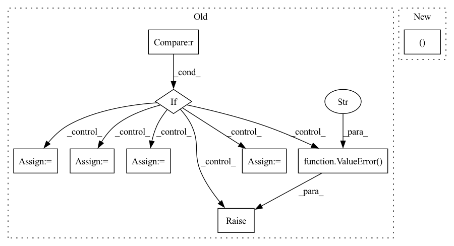

Pattern ID :19253

Before Change
_check_response_errors(response)
task = response.parsed.task
if task == TaskType.TEXTCLASSIFICATION:
from rubrix.sdk.api.text_classification import _get_dataset_data
map_fn = self._text_classification_sdk_to_record
request_class = TextClassificationQuery
elif task == TaskType.TOKENCLASSIFICATION:
from rubrix.sdk.api.token_classification import _get_dataset_data
map_fn = self._token_classification_sdk_to_record
request_class = TokenClassificationQuery
else:
raise ValueError(
f"Sorry, load method is only allowed with token and text classification"
)
response = _get_dataset_data.sync_detailed(
client=self._client,
name=name,
request=request_class(ids=ids or []),
After Change
task_config = {
TaskType.TEXTCLASSIFICATION: (
text_classification_get_dataset_data,
self._text_classification_sdk_to_client,
TextClassificationQuery,
),
TaskType.TOKENCLASSIFICATION: (
token_classification_get_dataset_data,
In pattern: SUPERPATTERN
Frequency: 3
Non-data size: 9
Instances
Fragment ID: 62676105
Project Name: recognai/rubrix
Commit Name: 2eb78d55e689aa09ee41118efd77eaaaceccbb9b
Time: 2021-09-07
Author: francisco@recogn.ai
File Name: src/rubrix/client/__init__.py
M Class Name: RubrixClient
N Class Name: RubrixClient
M Method Name: load(4)
N Method Name: load(4)
M Parent Class:
N Parent Class:
M File Name: src/rubrix/client/__init__.py
N File Name: src/rubrix/client/__init__.py
M Start Line: 192
M End Line: 208
N Start Line: 224
N End Line: 251
'>
Before Change
class GeneralGroupedDataLoader(NegSampleBasedDataLoader):
def __init__(self, config, dataset, sampler, phase, neg_sample_args,
batch_size=1, dl_format=InputType.POINTWISE, shuffle=False):
if neg_sample_args["strategy"] != "to":
raise ValueError("neg_sample strategy in GeneralGroupedDataLoader() should be `to`")
if dl_format == InputType.PAIRWISE:
raise ValueError("pairwise dataloader cannot neg sample to")
self.uid2items = dataset.uid2items
self.full = (neg_sample_args["to"] == -1)
super(GeneralGroupedDataLoader, self).__init__(config, dataset, sampler, phase, neg_sample_args,
batch_size, dl_format, shuffle)
label_field = self.config["LABEL_FIELD"]
self.dataset.field2type[label_field] = "float"
self.dataset.field2source[label_field] = "inter"
self.dataset.field2seqlen[label_field] = 1
def _batch_size_adaptation(self):
if self.neg_sample_args["to"] == -1:
After Change
class GeneralGroupedDataLoader(GeneralInteractionBasedDataLoader):
def __init__(self, config, dataset, sampler, phase, neg_sample_args,
batch_size=1, dl_format=InputType.POINTWISE, shuffle=False):
self.uid2index, self.uid2items_num = dataset.uid2index
super(GeneralGroupedDataLoader, self).__init__(config, dataset, sampler, phase, neg_sample_args,
batch_size, dl_format, shuffle)
'>
Fragment ID: 62676100
Project Name: rucaibox/recbole
Commit Name: f60d378cf81fae5001fcb3c8ddba9ef8d4553aac
Time: 2020-08-11
Author: 297086016@qq.com
File Name: data/dataloader.py
M Class Name: GeneralGroupedDataLoader
N Class Name: GeneralGroupedDataLoader
M Method Name: __init__(9)
N Method Name: __init__(9)
M Parent Class: GeneralInteractionBasedDataLoader
N Parent Class: NegSampleBasedDataLoader
M File Name: data/dataloader.py
N File Name: data/dataloader.py
M Start Line: 210
M End Line: 224
N Start Line: 213
N End Line: 213
'>
Before Change
should_backwards = any([*map(lambda t: t.requires_grad, (q, k, v, attn_bias))])
if v_dim == 64:
forward = forward_value_64
backward = backward_value_64
elif v_dim == 32:
forward = forward_value_32
backward = backward_value_32
else:
raise ValueError("invalid value dimension")
o, l = forward(
q, k, v,
mask,
After Change
scale,
causal
):
qk_dim, v_dim = q.shape[-1], v.shape[-1]
batch, heads, seq, _, dim, device, dtype = *q.shape, v.shape[-1], q.device, q.dtype
mask = default(mask, lambda: torch.ones(q.shape[0], 0, device = q.device, dtype = torch.bool))
'>
Fragment ID: 62676102
Project Name: lucidrains/flash-cosine-sim-attention
Commit Name: 2537a7c7f24af6caa566ba4fe1487516e0ed9780
Time: 2022-09-24
Author: lucidrains@gmail.com
File Name: flash_cosine_sim_attention/flash_cosine_sim_attention.py
M Class Name: FlashCosineSimAttention
N Class Name: FlashCosineSimAttention
M Method Name: forward(8)
N Method Name: forward(8)
M Parent Class: Function
N Parent Class: Function
M File Name: flash_cosine_sim_attention/flash_cosine_sim_attention.py
N File Name: flash_cosine_sim_attention/flash_cosine_sim_attention.py
M Start Line: 90
M End Line: 128
N Start Line: 88
N End Line: 88